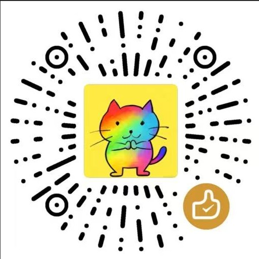

读取中…
!
怎么写字
#项目挂到某个项目上
!高直接定优先级（高 / 中 / 低）
日期明天 · 下周三 · 3 月 5 日
关掉之后
标题整句话原样当标题，不再拆
日期仍然是今天
写法
# 和 ! 都变成普通文字
1应用凭证
用飞书扫这个码
2多维表格
手动填写
3同步
已启用
底表
—
App Secret 是明文存在浏览器里的，谁拿到这份扩展包都能读出来。所以这个应用只给它多维表格权限，别用管理员身份的密钥。
未配置
已启用
1团队表
手动填写
2到达
网页球
吉祥物
说话
弹提示
提醒
要取回，在弹窗底栏点「归档 N」。
读取中…
任务分析
优先级含已完成
团队任务
近 14 天
完成热力近 12 周
需要关注逾期 → 今天到期 → 挂起
读取中…
!
打开之后它做什么
认句子你写的话它没看懂时补一手
不出手认不出来就什么都不做，绝不猜
不替你做决定不催办、不改写、不排程
它跟上面那个开关
不是一回事「填写」管怎么写，这里管用什么算
默认关。想用才开
!
认句子
什么时候你写出它没学过的说法，比如「下周三给张总回个话」
给什么只是草稿 —— 回车照旧立刻建任务，几秒后它想明白了就地改好
反悔会给你一个「按 AI 理解改的」撤销按钮
用在哪儿
!
仅本机
走什么浏览器自带的小模型
代价要下几个 G，下完不联网、不花钱，一个字节都不出这台电脑
云端
走什么你自己填的那个地址
代价句子和数字会发过去；Key 只写在本机，不进导出文件
本机支持情况
有官方 Chrome 138 起自带
没有Chromium 分支（Tabbit、夸克）和 Edge 大多没编进去 —— 不是坏了
在哪跑
AI 大模型
管理你的 AI 大模型 API 配置
API Key 信息仅保存在本地浏览器中，不会上传到任何服务器
暂无 AI 大模型配置
添加你的第一个 AI 大模型，AI 能力才有得用
任务台 · 浏览器任务流转
作者
微信赞赏

renoo
支付宝
周先生的小铺(*明)
版本
v0.45.1